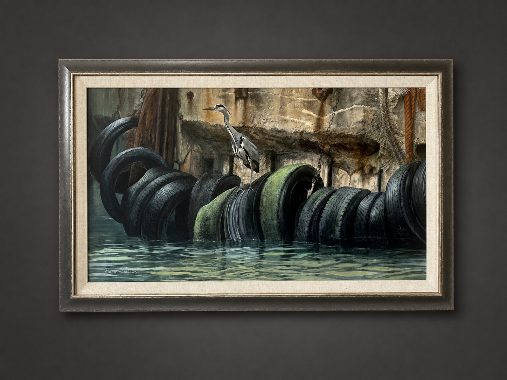

AMBLESIDE ARTIST
Matthew Hillier
Wildlife · Oil · Animal Painting
FEATURED WORK

Grey Heron on Tire
Matthew Hillier
THE ARTIST
A lifetime
observing the
wild.
Matthew Hillier was born in Farnham Common, Buckinghamshire, England, and grew up near the coast in Elmer Sands, West Sussex.
At sixteen, he left school to attend Dyfed College of Art in Carmarthen, South Wales, where he entered one of the country's earliest wildlife illustration programs. As the youngest student at the college, Hillier spent three years traveling through the Welsh countryside, studying and painting birds and animals. He graduated with distinction.
Before his eighteenth birthday, three of Hillier's paintings were accepted into the Royal Academy Summer Exhibition — an early achievement that brought widespread attention to his work.
He subsequently established himself as a wildlife artist and illustrator, producing work for books, magazines, calendars and greeting cards while continuing to exhibit his paintings.
Hillier's work was shown through a number of professional societies and exhibitions, including the Society of Wildlife Artists, the Paris Salon, the Pastel Society and the Society of Marine Artists.
His career eventually brought him to the United States, where he settled permanently in 2000. Hillier now lives and works on Maryland's Eastern Shore in the waterside village of Tunis Mills, near Easton.
THE WORK
Observation becomes encounter: animal, habitat and atmosphere held within a single moment.
FIELD STUDY
Seeing animals
in their own
world.
A major turning point in Hillier's career came through a commission to illustrate The Rhinoceros, A Monograph.
The project led to years of international travel studying four of the world's five rhinoceros species within their natural habitats.
Hillier spent three months in Zimbabwe observing black and white rhinoceroses and also traveled into the Sumatran jungle, where he encountered the Sumatran rhinoceros Torgamba.
That sustained observation of wildlife in its environment became central to a practice built not simply around depicting animals, but around understanding movement, behavior, habitat and atmosphere.
SELECTED WORKS
The Collection
Jay on Fence
Thompson Gazelles
CAREER
Recognition & Practice
ROYAL ACADEMY
Three paintings accepted into the Royal Academy Summer Exhibition before his eighteenth birthday.
SWLA
Elected member of the Society of Wildlife Artists.
SAA
Member of the Society of Animal Artists.
ASMA
Member of the American Society of Marine Artists.
BIRDS IN ART
Regular exhibitor in the annual Birds in Art exhibition.
WATERFOWL FESTIVAL
Featured artist at the Waterfowl Festival in Easton, Maryland.
MUSEUM COLLECTIONS
Works represented in the James Museum in St. Petersburg, Florida, and the Hiram Blauvelt Art Museum in New Jersey.
TEACHING
Hillier teaches workshops throughout the United States and has taught oil painting through the Academy Art Museum in Easton, Maryland.
COLLECT